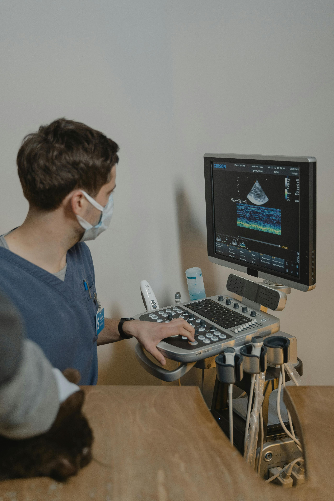
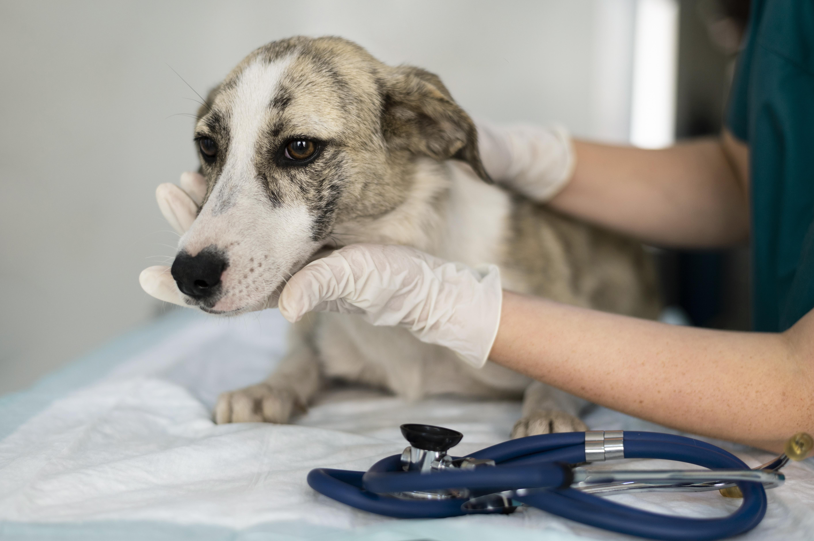
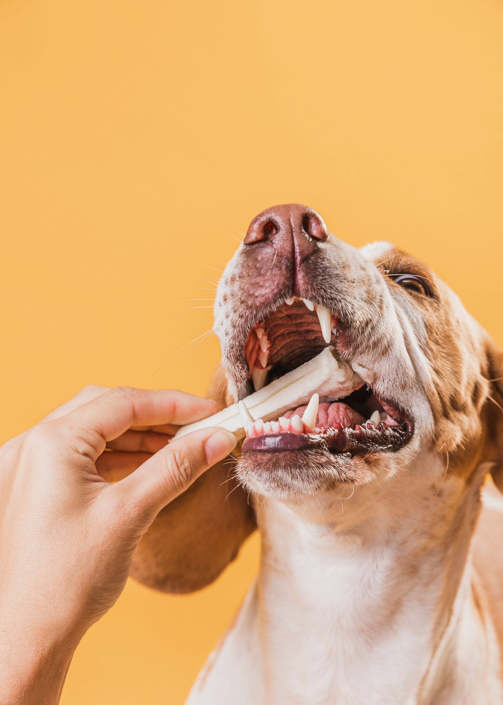
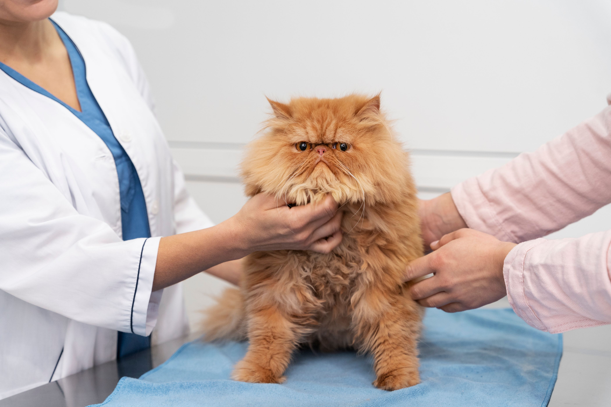

الرعاية البيطرية
نوفر رعاية بيطرية شاملة للحيوانات الأليفة تشمل الفحوصات والتشخيص والعلاج لضمان حياة صحية وسعيدة.

الفحوصات الطبية
فحوصات دورية وتشخيص مبكر للأمراض.

التحاليل المخبرية
تحاليل دم، بول، وبراز لمتابعة صحة الحيوان.

العلاجات الدوائية
صرف الأدوية والمتابعة للحالات المزمنة.

العناية بالأسنان
تنظيف الأسنان وعلاج التهابات اللثة.

التغذية والإرشاد
خطط غذائية مخصصة للحفاظ على وزن صحي.
المتابعة المنزلية
رعاية ما بعد التطعيمات والعمليات.